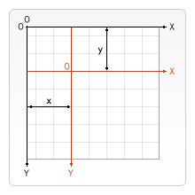
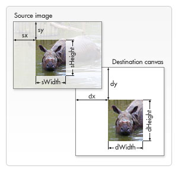
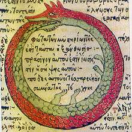

RETURN TO INDEX
LESSON 5: MOVING TO CANVAS
In this lesson you will leave the DOM behind for a much more powerful visual API, HTML5 Canvas 2D.
"Who's ear is this?"
~ Van Gogh
CODE
HTML
CSS
/* CSS RESET HIDDEN */
.fountain-target {
background-color: black;
position: fixed;
top: 0;
left: 0;
height: 100vh;
width: 100vw;
z-index: -999;
}
JAVASCRIPT
'use strict';
const fountain = (() => {
const give_data = target => {
const
width = target && target.clientWidth,
height = target && target.clientHeight;
return { width, height, center: { x: width / 2, y: height / 2 } };
};
class Interface {
constructor(options = {}) {
this._options = options;
this.parent = options.parent || null;
}
initialize() { }
update() { }
render() { }
reset() { }
get root() {
!this._local_root && (this._local_root = this.parent && this.parent.root || this);
return this._local_root;
}
get canvas() {
return this.root.canvas;
}
get context() {
return this.root.context;
}
get hold() {
return this.root.hold;
}
}
class Element extends Interface {
initialize() {
if (!this.parent) {
throw new Error(`${this.constructor.name}: NO PARENT - REQUIRES PARENT`);
}
this._waiting = this.hold;
this._path = new Path2D();
/* CREDIT TO DEV-DOCS FOR HEART PATTERN */
this._path.moveTo(7.5, 4.0);
this._path.bezierCurveTo(7.5, 3.7, 7.0, 2.5, 5.0, 2.5);
this._path.bezierCurveTo(2.0, 2.5, 2.0, 6.25, 2.0, 6.25);
this._path.bezierCurveTo(2.0, 8.0, 4.0, 10.2, 7.5, 12.0);
this._path.bezierCurveTo(11.0, 10.2, 13.0, 8.0, 13.0, 6.25);
this._path.bezierCurveTo(13.0, 6.25, 13.0, 2.5, 10.0, 2.5);
this._path.bezierCurveTo(8.5, 2.5, 7.5, 3.7, 7.5, 4.0);
/* CREDIT TO DEV-DOCS FOR HEART PATTERN */
this.reset();
}
update() {
if (this.position.y > this.canvas.height || this.position.y < 0) {
this.reset();
if (this.hold) {
this.velocity = { x: 0, y: 0 };
this._waiting = true;
}
}
if (!this.hold && this._waiting) {
this.reset();
this._waiting = false;
}
this.position.x += this.velocity.x;
this.position.y += this.velocity.y;
this.velocity.y += 0.1;
}
render() {
this.context.fillStyle = this.color;
this.context.save();
this.context.translate(this.position.x, this.position.y);
this.root.scale !== 1 && this.context.scale(this.root.scale, this.root.scale);
this.context.fill(this._path);
this.context.restore();
}
reset() {
this.position = { x: (this.canvas.width / 2), y: this.canvas.height };
this.velocity = { x: +`${Math.random() > 0.5 ? '-' : '+'}${Math.random() * 1.5}`, y: ((Math.random() * -20) - 1) };
this.color = `rgb(255, ${Math.round(Math.random() * 255)}, ${Math.round(Math.random() * 255)})`;
}
}
class Manager extends Interface {
constructor(options) {
super(options);
this._initialize();
}
_initialize() {
this.target = this._options.target;
if (!this.target || !(this.target instanceof HTMLElement)) {
throw new Error(`${this.constructor.name}: NO TARGET ELEMENT`);
}
this._canvas = document.createElement('canvas');
this._context = this.canvas.getContext('2d', { alpha: false });
this.target.append(this._canvas);
window.addEventListener('resize', () => this._resize());
this._resize();
this.quantity = this._options.quantity || 1000;
this.scale = this._options.scale || 1;
this.children = new Array(this.quantity)
.fill(null)
.map(v => new Element({ parent: this }));
this.children.forEach(v => v.initialize());
this.mousehold = false;
this.keyhold = false;
this.touchhold = false;
document.addEventListener('mousedown', () => this.mousehold = true);
document.addEventListener('touchstart', () => this.touchhold = true);
document.addEventListener('keydown', () => this.keyhold = true);
document.addEventListener('mouseup', () => this.mousehold = false);
document.addEventListener('touchend', () => this.touchhold = false);
document.addEventListener('keyup', () => this.keyhold = false);
this._repeat();
}
_update() {
this.children.forEach(v => v.update());
}
_render() {
this.context.clearRect(0, 0, this.canvas.width, this.canvas.height);
this.children.forEach(v => v.render());
}
_repeat() {
this._update();
this._render();
window.requestAnimationFrame(() => this._repeat());
}
_resize() {
const { width, height } = give_data(this.target);
this._canvas.width = width;
this._canvas.height = height;
}
get hold() {
return this.mousehold || this.touchhold || this.keyhold;
}
get canvas() {
return this._canvas;
}
get context() {
return this._context;
}
}
return {
Manager
};
})();
window.addEventListener('DOMContentLoaded', () => {
Array.from(document.querySelectorAll('.fountain-target')).forEach(target => {
new fountain.Manager({
scale: +target.dataset.scale,
quantity: +target.dataset.quantity,
target
});
});
});
WHAT IS CANVAS
A canvas is just a DOM element like any other; rectangular and transparent by default.
What makes it special is that it comes with a powerful API that allows you to draw and render all kinds of graphics on it.
NOTE: This includes the WebGL2 API for 3D hardware-accelerated graphics. However this tutorial will be focusing on the 2D API.
The 2D API can be accessed by calling "getContext('2d')" on a reference to a canvas element. This is your handle for controlling that canvas instance.
HTML
JAVASCRIPT
const canvas_element = document.querySelector('.drawing_area');
const canvas_context = canvas_element.getContext('2d');
Once you have a reference to the canvas context, you can render images, video, custom drawn shapes/primitives, and more onto the element with great performance and ease.
WHY CANVAS
Why use the canvas API after learning how to do animations in the DOM up to this point?
Well there are many options for rendering graphics in a web environment:
- DOM - Document Object Model and CSS
- CSS - Keyframes and DOM Animation API
- Canvas2D - Partially Hardware-accelerated 2D Graphics via Canvas
- SVG - Scalable Vector Graphics
- WebGL2(OpenGL) - Hardware-accelerated 2D or 3D Graphics via Canvas
- Third Party Graphics Libraries
Comparing them there are benefits and pitfalls to each.
For instance WebGL2 and SVG are very powerful and performant graphics API's, but they come with a steep learning curve and a lot more code. WebGL2 is great for 3D graphics and extreme S.I.M.D computations.
Simple DOM graphics are usually easier to understand and implement for web developers, just HTML and CSS, but they generally do not perform or scale very well. These are preferred for small scale graphic effects and web pages. They also might produce S.E.O or accessibility problems.
CSS Keyframes animations possibly coupled with the DOM Animation API are more performant and provide more control that typical HTML/CSS animations, and are generally easier to learn. However, they don't provide the level of control that you might want in a game, graphic or animation.
Third party graphics libraries, which are built on top of the other mentioned API's, are likely the most sensible option. They provide all of the graphics tools and methods you are likely to need and more. They are often well tested and are great for rapid development of production ready graphics or games. However, you would be wise to know the inner workings of these libraries before using them. That means learning the fundamentals first, which you are doing right now!
The canvas two dimensional API is pretty easy to learn, pretty performant, and comes with a lot of tools built in. This API is what this tutorial will be using from here on out. This is not to say that you should not learn the others, there are applications for them all.
In the end it can be hard to choose from so many options. As a developer you are going to want to get the job done one way or the other. Your circumstances might influence your framework decision, or even make it for you. If you are working on a development team or an existing project, you will probably use whatever tool they/it were already using. If you agreed to develop a web game for a company within two months, you might want you use a third party library to speed up the work flow. This might be the right choice, or it might mean licensing issues. If you take the time to learn the fundamentals, you could code the whole thing from scratch, no license issues and totally customizable. Only you will know what you will need to do, but being dynamic and flexible will be very useful in the long run. If you don't know it, you can learn it.
All things considered, canvas is a good choice for this tutorial and will serve you well.
The next sections will cover some of the API's usage.
HIDDEN MATRIX OPERATIONS
If you are an expert on geometry, trigonometry, linear algebra, and calculus, then that must be nice. Pat yourself on the back or something.
For everyone else in the world you can rest easy knowing that the canvas API abstracts away most of these operations behind a simple set of methods.
AUTHORS SECRET: I hate math and I'm pretty sure math hates me too.
Most computer graphics are managed using mostly trigonometry and linear algebra(triangles, vectors and matrices). These mathematical objects and methods are the foundation for canvas as well. Luckily you don't have to know how they work to use them.
A 2D canvas uses a similar X and Y coordinate system as the DOM does with left and top CSS styles, respectively.

Here you will learn a small set of transformation methods that you will use within your render methods to keep things working nicely.
- SAVE
- TRANSLATE
- ROTATE
- SCALE
- [DRAW]
- RESTORE
NOTE: This lesson code will not take into account local object origins for rotations, that will be in the next lesson.
The order of operations here matters.
You should always start with SAVE, and end with RESTORE.
In the middle you can TRANSLATE, ROTATE, and then SCALE. Depending on your setup, you might not follow this order, but for now stick to this one.
If you switch it up you might get unexpected results.
The SAVE operation takes the state of the canvas(the transformation matrix and some other stuff), before any transformations, and saves it for later. If this doesn't make any sense to you don't worry, just always start a transformation pipeline with SAVE.
canvas_context.save();
The TRANSLATE operation moves the whole canvas's origin(the coordinate { x: 0, y: 0 }) to another point. This means that if you draw something at coordinate { x: 0, y: 0 } but you translated to { x: 20, y: 20 }, the object gets drawn at { x: 20, y: 20 }, relative to the canvas's top left point. This is must be done before rotation otherwise the canvas will rotate about { x: 0, y: 0 } instead of the local object origin.

canvas_context.translate(20, 20);
The ROTATE operation rotates the whole canvas around the canvas origin(after translation) by a number of radians(one radian === Math.PI * 2). You will use this operation to rotate an object in place.

canvas_context.rotate(Math.PI);
The SCALE operation multiplies the distance between points on the coordinate graph by a value. What this means is if you scale by 2 the object will double in size, if you scale by 0.5 it will shrink by half. The operation takes in an X and Y value.
canvas_context.scale(2, 2);
The DRAW step in the pipeline is when you actual draw or render to the canvas, by whatever means you choose.
canvas_context.fillRect(10, 10, 50, 50)
Finally the RESTORE operation restores the canvas's transformation state back to before the SAVE operation. This way every object on the canvas can have it's own set of transformation states.
canvas_context.restore();
That's it! Math is one of the sticking points for many coders, but if you just stick with it, it will get easier. Just remember to save and restore before every set of operations.
Later lessons will expand on each of these concepts in more detail.
Now you can move on to some of the different drawing tools for canvas.
DRAWING SHAPES
Canvas provides you with a simple but powerful set of drawing methods that if used properly can produce complex graphics with simple code.
Out of the box canvas is capable of drawing:
- RECTANGLES
- ARCS AND CIRCLES AND ELLIPSES
- QUADRATIC AND BEZIER CURVES
- COMPLEX PATHS AND SHAPES
NOTE: This course is not intended to be a full canvas tutorial, so it is reccomended that you take a look at the Dev-Docs tutorial linked at the bottom of this page to get a more thorough grasp of canvas.
STYLES
Canvas style settings are held in state that you can change at any point.
You can imagine a color pallet for a painter; the current state is the color that you have on the brush.
There are many state settings, but the most obvious is the fill and stroke color. Once you set these they will stay until they are changed again.
INFO: To fill is to draw the entire contents of a shape with the selected color. To stroke is to only color the outline or border with the selected color. These two colors can be different from each other.
canvas_context.fillStyle = 'rgb(255, 0, 0)';
canvas_context.strokeStyle = 'rgb(0, 255, 0)';
RECTANGLES
Rectangles are simple to draw with canvas as you only have to define two coordinates.
You can fill, stroke, or clear(turn transparent or black depending on settings) a rectangle by the two points, as passed in (x1, y1, x2, y2);
canvas_context.fillRect(0, 0, 10, 10);
canvas_context.strokeRect(0, 0, 10, 10);
canvas_context.clearRect(2.5, 2.5, 7.5, 7.5);
This code would fill a square, stroke it, and then clear a sub-square within it.
ARCS, CIRCLES AND ELLIPSES
Arcs and circles allow you to draw around a point like a compass.
Ellipses work like an arc but allow for different x and y radii.
Stroke will draw where the compass pencil touches the paper, fill will fill the pie as far as it was drawn.
canvas_context.arc(x, y, radius, start_angle, end_angle, anticlockwise_flag);
canvas_context.stroke();
canvas_context.fill();
QUADRATIC AND BEZIER CURVES
Don't let the names scare you off, they are pretty simple to understand.
These guys can however be difficult to wrangle without a graphic design tool to create and export paths.
That being said they work like so.
Quadratic curves take a starting coordinate, an ending coordinate, and a control point coordinate.
Bezier curves work similarly but they have two control points, their varied distances can create complex organic curves.

The starting point must be declared before the function call.
canvas_context.moveTo(10, 10);
canvas_context.quadraticCurveTo(25, 25, 25, 62.5);
canvas_context.fill();
canvas_context.moveTo(100, 100);
canvas_context.bezierCurveTo(75, 37, 70, 25, 50, 25);
canvas_context.stroke();
COMPLEX PATHS AND SHAPES
You can manually draw any two dimensional shape, or combination of other segments or shapes, using a pen-like tool.
You tell canvas the color of the pen. You can place the pen down at a coordinate. Then you can drag the pen to another coordinate. You can lift the pen off the canvas and place it somewhere else, or any combination of it all. Once you are ready you simply call fill or stroke and canvas will draw the whole path you created.
Use "moveTo" to lift and place the pen at a coordinate.
Then use any of the path methods to draw from that point.
Finally call fill or stroke to complete the drawing operation.
canvas_context.moveTo(250, 250);
canvas_context.lineTo(1050, 250);
canvas_context.lineTo(250, 1050);
canvas_context.fill();
This code draws a triangle.
COMPUTE ONCE DRAW MULTIPLE
Since these complex drawing methods can take some time to compute, you can use a Path2D object to store the computed path.
This way you only compute the path once, but can draw it as many times as you like.
This can significantly improve performance for similar actions.
const path = new Path2D();
path.moveTo(7.5, 4.0);
path.bezierCurveTo(7.5, 3.7, 7.0, 2.5, 5.0, 2.5);
path.bezierCurveTo(8.5, 2.5, 7.5, 3.7, 7.5, 4.0);
canvas_context.stroke(path);
canvas_context.fill(path);
That sums up the shape drawing toolset for canvas. You should however look through the canvas docs to learn them all and play around with them.
Now on to drawing images.
DRAWING IMAGES
Whether you are making a game or post-processing profile photos, canvas is a great place to render images.
Canvas provides a very dynamic method for drawing pre-loaded images to a canvas.
canvas_context.drawImage();
The method can take one of three sets of arguments.
canvas_context.drawImage(image, dx, dy);
canvas_context.drawImage(image, dx, dy, dWidth, dHeight);
canvas_context.drawImage(image, sx, sy, sWidth, sHeight, dx, dy, dWidth, dHeight);
The first is the image to render ad the x and y coordinates of where to place the top left of the image.
The second includes two arguments to define how to scale the image by x and y.
The third includes arguments to define the sub-rectangle of the image that you wish to render.
The following code would load and draw an image at it's default, with the top left at the canvas origin.
const img = new Image();
const prom = new Promise(resolve => img.addEventListener('load', resolve))
img.src = '../fake_path/fake.png';
await prom;
canvas_context.drawImage(img, 0, 0)
MINI-CHALLENGE: How would you go about implementing spritesheets like in lesson three using the third method listed here?
The image drawing method for canvas is powerful and flexible, allowing you to implement scaling and cropping with ease.
COMPOSITE OPERATIONS
Canvas comes with some special settings that allow you to implement very interesting effects.
This is the global composite operation state setting.
canvas_context.globalCompositeOperation = 'source-over';
This setting allows you to take control of how one path or image is drawn relative to the pixels that were already drawn on the canvas in that spot.
There are a ton of options, too much to go over in this lesson. So you are encouraged too explore the canvas docs to learn more.
That being said here is a list of types and definitions as provided by Dev-docs.
-
source-over
- This is the default setting and draws new shapes on top of the existing canvas content.
-
source-in
- The new shape is drawn only where both the new shape and the destination canvas overlap. Everything else is made transparent.
-
source-out
- The new shape is drawn where it doesn't overlap the existing canvas content.
-
source-atop
- The new shape is only drawn where it overlaps the existing canvas content.
-
destination-over
- New shapes are drawn behind the existing canvas content.
-
destination-in
- The existing canvas content is kept where both the new shape and existing canvas content overlap. Everything else is made transparent.
-
destination-out
- The existing content is kept where it doesn't overlap the new shape.
-
destination-atop
- The existing canvas is only kept where it overlaps the new shape. The new shape is drawn behind the canvas content.
-
lighter
- Where both shapes overlap the color is determined by adding color values.
-
copy
- Only the new shape is shown.
-
xor
- Shapes are made transparent where both overlap and drawn normal everywhere else.
-
multiply
- The pixels are of the top layer are multiplied with the corresponding pixel of the bottom layer. A darker picture is the result.
-
screen
- The pixels are inverted, multiplied, and inverted again. A lighter picture is the result (opposite of multiply)
-
overlay
- A combination of multiply and screen. Dark parts on the base layer become darker, and light parts become lighter.
-
darken
- Retains the darkest pixels of both layers.
-
lighten
- Retains the lightest pixels of both layers.
-
color-dodge
- Divides the bottom layer by the inverted top layer.
-
color-burn
- Divides the inverted bottom layer by the top layer, and then inverts the result.
-
hard-light
- A combination of multiply and screen like overlay, but with top and bottom layer swapped.
-
difference
- A softer version of hard-light. Pure black or white does not result in pure black or white.
-
soft-light
- Subtracts the bottom layer from the top layer or the other way round to always get a positive value.
-
exclusion
- Like difference, but with lower contrast.
-
hue
- Preserves the luma and chroma of the bottom layer, while adopting the hue of the top layer.
-
saturation
- Preserves the luma and hue of the bottom layer, while adopting the chroma of the top layer.
-
color
- Preserves the luma of the bottom layer, while adopting the hue and chroma of the top layer.
-
luminosity
- Preserves the hue and chroma of the bottom layer, while adopting the luma of the top layer.
The "globalCompositeOperation" setting can be a powerful tool to implement common graphics rendering techniques when needed.
It is up to you to experiment with and research the canvas API if you want to become a master.
Now it is time to get back to the object oriented side of things.
INHERITANCE
Inheritance is at the heart of O.O.P.
Inheritance is the practice of one class inheriting the properties and methods of a super(aka parent) class while maintaining it's own independent properties and methods.
This means that you can modularize logic and code that instances will share into super and sub classes.
You can create a kind of family tree of classes that start with the most generic at the root and are the most specific on the leaves.
In JAVASCRIPT inheritance can be implemented using the "extends" and "super" keywords.
You can take a look at this example code where you have a super class of Dog(also the root class) and a sub class of Wolf.
class Dog {
constructor(name = `Feral ${this.constructor.name}`) {
this.name = name;
}
bark() {
console.log(`${this.name} barks!`)
}
receive_petting() {
console.log(`${this.name} is happy.`);
}
}
class Wolf extends Dog {
constructor(name) {
super(name);
this.hungry = true;
}
receive_petting() {
this.bite();
super.receive_petting();
}
bite() {
console.log(`${this.name} bites you!`);
}
}
Dog receives his/her name via the constructor, it is stored as a property. The default is 'Feral [class name]', in Dogs case 'Feral Dog'.
Dog also has bark and receive_pet methods.
Wolf is an extension(or sub class) of Dog. This is defined by the 'extends' keyword in the class declaration.
Wolfs constructor calls it's super classes constructor and passes the name argument up the chain. This is done with the call 'super()'. Because of this, Wolf preserves the default value of its super class Dog. Wolf is also hungry.
Wolf also has all of the methods of Dog, including bark. Wolf has an additional bite method. Wolf does have another version of receive_petting that is overriding the method from Dog. In order to preserve the functionality of the Dog receive_petting method while adding more to it, the method calls the method of the Dog super class within itself after executing using the super keyword to access the super class.
const fido = new Dog('Fido');
const anonymous = new Wolf();
fido.bark();
// OUTPUTS Fido barks!
fido.receive_petting();
// OUTPUTS Fido is happy.
anonymous.bark();
// OUTPUTS Feral Wolf barks!
anonymous.receive_petting();
// OUTPUTS Feral Wolf bites you!
// OUTPUTS Feral Wolf is happy.
The 'instanceof' keyword acts as a conditional check to see if the left hand operand is an instance or descendant of the right hand operand class. This can be nice tool to check an instance to see if it matches the class or super class you want.
console.log(fido instanceof Dog);
// OUTPUTS true
console.log(fido instanceof Wolf);
// OUTPUTS false
console.log(anonymous instanceof Dog);
// OUTPUTS true
console.log(anonymous instanceof Wolf);
// OUTPUTS true
You can see that fido is a Dog but not a Wolf, anonymous is a Dog and a Wolf.
By modularizing functionality into super classes, sub classes can be much more concise and semantic.
Though some would argue against it in favor of composition, inheritance is a powerful tool that if used properly can help you build a robust tree of object prototypes.
RECURSION
Recursion is an ancient concept fundamental to the structure if reality itself.
Recursion occurs when a thing is defined in terms of itself or of its type
In JAVASCRIPT, recursion is when a function calls itself within itself.
Recursion is an incredibly powerful conceptual tool that is often the solution to problems that are hard to wrap your head around.
Any task that can be handled with recursion can also be handled with iteration(looping). However there are times when it makes much more sense to use recursion.
Recursion is called for when you DON'T know how many times you will need to repeat.
WARNING: Recursive calls can create an expensively large callstack, or blow the callstack completely. Make sure that you do not create infinite recursion outside of a generator function. Also be mindful that recursion may not fit the problem at hand, iteration may be better. Or maybe a combination of the two. Iteration can be a means of "flattening".
Take a look at the following recursive factorial function.
NOTE: The factorial of a non-negative integer number, is the product(output of multiplication) of all positive integers less than or equal to that number. For example, factorial(5) === 5 * 4 * 3 * 2 * 1 === 120.
NOTE: An integer is a number with no decimal values. For example, 2 is an integer, 2.25 is not. 2.25 is a floating point number.
const factorial = (number, accumulator = 1) => !number ? accumulator : factorial(number - 1, accumulator * number);
Or without the ternary.
const factorial = (number, accumulator = 1) => number && factorial(number - 1, accumulator * number) || accumulator;
Or the long version.
const factorial = (number, accumulator = 1) => {
number = Math.abs(Math.trunc(number));
if (number === 0) {
return accumulator;
}
return factorial(number - 1, accumulator * number);
}
They all work essentially the same.
console.log(factorial(5));
// OUTPUTS 120
Breaking it down piece by piece.
The parameters for the function take expect a number that the function will run on. There is also an accumulator that is initialized as the number 1. This is because the first multiplication should produce itself, which is what happens when you multiply any number by 1.
const factorial = (number, accumulator = 1) => { }
Then you can pre-process the input number to make sure it is a non-negative integer, using "Math.abs()" to force a positive number and "Math.trunc()" to force an integer.
const factorial = (number, accumulator = 1) => {
number = Math.abs(Math.trunc(number));
}
Next you define the base case. When "number" is zero the function is complete and you can return the product(accumulator). This will fire up through the call stack the final product.
const factorial = (number, accumulator = 1) => {
number = Math.abs(Math.trunc(number));
if (number === 0) {
return accumulator;
}
}
If the base case has not yet been reached, you recurse. This means you return the output of a call to the same function with a different subset of arguments. In this case number as number minus one, and the product of the accumulator multiplied by the number as the new accumulator value.
const factorial = (number, accumulator = 1) => {
number = Math.abs(Math.trunc(number));
if (number === 0) {
return accumulator;
}
return factorial(number - 1, accumulator * number);
}
This process of repetition will continue counting down "number" and multiplying "accumulator" by "number" until "number" reaches zero and then it will return "accumulator" all the way back to the first call to the function.
This simple example showcases the fundamentals of recursion. Technically this is tail recursion as the recursive function call is the LAST thing to occur in the function each time.
RECURSION CONCEPTS:
- BASE CASE
- ALL PATHS LEAD TO BASE CASE
- DEPTH FIRST SEARCH
- POWER AND SEMANTICS
- RECURSIVE CLASS GETTERS
BASE CASE
In recursive functions the base case is a condition that when met ends the recursion and returns up the call stack.
There always needs to be a base case in a recursive function otherwise it could repeat infinitely.
The base case in the example code above is when "number" reaches zero.
const factorial = (number, accumulator = 1) => {
number = Math.abs(Math.trunc(number));
if (number === 0) {
return accumulator;
}
return factorial(number - 1, accumulator * number);
}
The base case should come before the recursion case. Like a roadblock, the function must pass the base case test before continuing to repeat.
ALL PATHS LEAD TO BASE CASE
It is imperative that no matter what, the base case will eventually occur.
WARNING: If you do not confirm that function parameters are valid, a user could cause an infinite recursive loop. This is possible with the shorthand factorial functions in the code above. If for example you input a floating point number(2.25) it would recurse forever.
In tail recursion as above the conditional check for the base case occurs before a call to recurse.
Take a look at the code.
const factorial = (number, accumulator = 1) => {
number = Math.abs(Math.trunc(number));
if (number === 0) {
return accumulator;
}
return factorial(number - 1, accumulator * number);
}
Because "number" is guaranteed by the first line to be a positive integer or zero and because every time the function recurses it is decremented by one. It will inevitably become zero at some point. It WILL count down until it reaches zero.
No matter what number the user puts in(as long as it's a number...) the function will eventually stop and return a value, the accumulator.
DEPTH FIRST SEARCH
Recursion is very useful for implementing a depth first search.
NOTE: Depth First Search or DFS is a term to describe an algorithm for searching a tree or graph data structure by "drilling" down to the deepest level first and then working back up recursively. As opposed to Breadth First Search(BFS), which searches each "level" completely before moving down to search more levels. BFS is usually implemented iteratively as opposed to recursively.
Imagine you had a multidimensional array of unknown dimensions.
const tree =
[
[
[1 , 2 , 3 , 4 , 5 ],
[6 , 7 , 8 , 9 ,[10, 11, 12]]
],
[
[13, 14, 15, 16, 17]
],
[
[18, 19, 20, 21, 22]
],
]
Okay so you do know how many dimensions but IMAGINE you don't.
You need to search it for say the number 13 and determine if it exists anywhere in the data structure.
DFS is a possible solution.
const tree_contains = (node, look_for) => {
if (node === look_for) {
return true;
}
return node instanceof Array && node.some(v => tree_contains(v, look_for));
}
Or a one-liner.
const tree_contains = (node, look_for) => node === look_for ? true : node instanceof Array ? node.some(v => tree_contains(v, look_for)) : false;
NOTE: Array.some() is an array method that runs a function on every element of the array until it returns true or it runs out of elements and returns false.
What happens is that when the function is called and the data structure is passed in alongside the thing you are searching for, it tells you if it exists in the data structure.
tree_contains(tree, 13);
// OUTPUTS true
It does this by first checking if the current node(array or number in this case) is what it is looking for. If it is then it returns(base case), otherwise if the node is an array, it loops over it calling tree_contains on each recursively UNTIL it finds a match. Else it return false.
In this way every time it comes across an array, it starts looking in that array, and if any of those elements are arrays, it starts looking in them, forever until it runs out of nodes or finds a match.
If you look at the data structure above, the elements are numbers or arrays and the numbers correspond to the order in which the DFS algorithm will look at them.
const tree =
[
[
[1 , 2 , 3 , 4 , 5 ],
[6 , 7 , 8 , 9 ,[10, 11, 12]]
],
[
[13, 14, 15, 16, 17]
],
[
[18, 19, 20, 21, 22]
],
]
Technically this algorithm uses a combination of recursion and iteration but rules are meant to be broken, it works!
By using recursion you can traverse an unknown or potentially infinite data set, DFS is an example of this.
POWER AND SEMANTICS
Though it is true that recursion is interchangeable with iteration in most programming languages with some changes. There are reasons why you would want to use recursion.
In recursion you might not need a work stack. As with iteration certain problems would require you to keep a state of the work to be done, with recursion the algorithm does not need to know WHERE it is to keep functioning the same way.
Some languages(turing complete) don't even allow you to use loops at all! These languages are attempting to implement the purest of functional programming.
Often times the recursive solution just fits the problem better than iteration. Recursion might be more how a human would solve a problem rather than a computer.
Recursion can also shorten up your code and make it much more expressive of your algorithmic intention.
RECURSIVE CLASS GETTERS
You can use the nature of class getters and setters to create simple but powerful algorithms for traversing the prototype or universe chain, among other things.
get root() {
return this.parent && this.parent.root || this;
}
This getter will search vertically up the universe chain of parents until it finds an object with no parent, the root.
This only works because every object in the chain inherits the same getter with the same recursive logic.
The power of recursion is expressed in the simplicity of this getter.
HANDLING USER INPUT
Up until this point, none of the examples have allowed user input to effect the state of the animations.
This example implements this with a rather simple binary on off switch.
As user input gets more complex and integrated into the functionality of an app, it can become more difficult to manage the timing.
As user input in the browser environment is handled by events, you will use event listeners to await these event.
Keep in mind that many events can occur in VERY rapid succession, likely much more often than you need to effectively handle user input in a timely manner.
One way of combatting this timing issue is to DEBOUNCE the events.
This essentially means that within a specific interval of time, you only accept one event that you will handle. If someone clicked 50 times in a hundredth of a second, you only run a click handler once for that interval.
This is implemented in the animation environment by an intermediary function that changes state in response to EVERY event. These intermediary functions are small and do not effect the state of animation or game, but rather just state of information about user input at the time.
The next step is to add an additional phase to the animation loop flow. HANDLE INPUT.
During this phase you will analyze the state of the user input data that may have been changed by the intermediary functions between animation ticks. Then actual animation or game state is UPDATED. In this way handle input is an extension of the UPDATE phase and does not explicitly get it's own category.
The benefit of debouncing and abstracting away the user input is that you are in control of WHEN you handle the users actions. It can also GREATLY improve performance by not repeating an event handler that modifies state of animation or game more than once a tick.
In future lessons, the handle input phase will be abstracted into its own class to manage all of the different types of input in a centralized and controlled way that the entire app can benefit from.
For now, this simple implementation will do.
Finally, now that you are done with all of that O.O.P theory, you can move on to how the example code works.
HOW IT WORKS
The animation is essentially a never ending fountain of colored hearts that can be collected and released by the user.
You may want to skip to the bottom of the page and take a look at the visual breakdown example of the animation.
The nature of the animation itself is not that much more complex than the previous lesson, however the code is extended further and canvas is used instead of the DOM.
Essentially each heart is just a JAVASCRIPT object with:
- Semi-random color.
- Randomly generated x and y velocity within a limited range.
- Center bottom position vector.
- All of the logic from the Interface and Element classes inherited.
Each time the animation updates:
- The position of each heart is added with the velocity of each to produce a new position.
- Conditionals check to make sure the heart is within the bounds of the element.
- If the heart is out of bounds, it is reset at bottom center with new state.
- The y velocity of every heart is increased slightly to mimic gravity.
- If the user is holding down a key, touch, or mouse the hearts are suspended at bottom center until the user releases.
Each time the animation renders:
- Each heart is drawn using the Path2D object created during initialization at the position vector with the state color.
- The hearts arc visually from the center up and out.
Considering that no images or DOM nodes were used in this animation(other than the canvas element itself), this animation is pretty cool.
Now to the code.
SETUP
Even though the rendering destination of this animation is the canvas, you will still need a bit of HTML and CSS to prepare things.
HTML
Just like before a target HTML element with scale and quantity data attributes.
CSS
/* CSS RESET HIDDEN */
.fountain-target {
background-color: black;
position: fixed;
top: 0;
left: 0;
height: 100vh;
width: 100vw;
z-index: -999;
}
Also similar to before, this just gives you a frame in which the canvas will expand to fit. The container is black and fitted to the entire viewport.
Simple enough, now on to the constructors.
CONSTRUCTOR
This animation uses three classes instead of two like last lesson.
The reason for this is to abstract away any shared functionality of the two main classes into a third parent class. This reduces code size and complexity while also implementing powerful inheritance.
You can call this root class Interface. All other animation objects within the universe will inherit from this root class.
const fountain = (() => {
// GIVE_DATA HIDDEN
class Interface { }
class Element extends Interface { }
class Manager extends Interface { }
// RETURN OBJECT HIDDEN
})();
The constructor contains the logic to accept an options object and store it locally. It also stores the parent property of the object, if it exists, locally as well.
const fountain = (() => {
// GIVE_DATA HIDDEN
class Interface {
constructor(options = {}) {
this._options = options;
this.parent = options.parent || null;
}
}
class Element extends Interface { }
class Manager extends Interface { }
// RETURN OBJECT HIDDEN
})();
The class also includes all of the standard animation methods that you can expect instances to use. They are blank, but since they exist, prevent errors when it is called on an instance. For instance if you created an object instance that inherits from Interface but has no reset method of it's own and you tried to call reset on that instance. It would not throw an error, it just wouldn't do anything.
const fountain = (() => {
// GIVE_DATA HIDDEN
class Interface {
constructor(options = {}) {
this._options = options;
this.parent = options.parent || null;
}
initialize() { }
update() { }
render() { }
reset() { }
}
class Element extends Interface { }
class Manager extends Interface { }
// RETURN OBJECT HIDDEN
})();
The class also contains some getters that define how ALL classes that inherit from Interface will acquire certain properties, ones that you want all instances to be able to access.
const fountain = (() => {
// GIVE_DATA HIDDEN
class Interface {
constructor(options = {}) {
this._options = options;
this.parent = options.parent || null;
}
initialize() { }
update() { }
render() { }
reset() { }
get root() {
!this._local_root && (this._local_root = this.parent && this.parent.root || this);
return this._local_root;
}
get canvas() {
return this.root.canvas;
}
get context() {
return this.root.context;
}
get hold() {
return this.root.hold;
}
}
class Element extends Interface { }
class Manager extends Interface { }
// RETURN OBJECT HIDDEN
})();
Most of the getters simply point to the root to acquire the property from there, instead of itself. This is so the value requested only has to be stored in one central location, the root, instead of many. The root getter itself though is a bit more involved.
get root() {
!this._local_root && (this._local_root = this.parent && this.parent.root || this);
return this._local_root;
}
This getter uses recursion to fire up the universe ancestry chain to the very top. It also stores the product of this search as a local property so the search only has to run once. After that the getter simply returns the local reference to the root of the instance universe.
That's it for the Interface class. It's job is only to be inherited from; it should never be instantiated itself.
The next two classes constructors are also simple.
For the Manager class it just preserves the logic of the override by calling super and passing up the options object. Then it calls it's own "_initialize()" method to fire things off.
const fountain = (() => {
// GIVE_DATA HIDDEN
// INTERFACE CLASS HIDDEN
class Element extends Interface { }
class Manager extends Interface {
constructor(options) {
super(options);
this._initialize();
}
}
// RETURN OBJECT HIDDEN
})();
// ACTIVATION LOOP HIDDEN
Since this is intended to be the universe root class it has to have some special getters that override the Interface getters.
const fountain = (() => {
// GIVE_DATA HIDDEN
// INTERFACE CLASS HIDDEN
class Element extends Interface { }
class Manager extends Interface {
constructor(options) {
super(options);
this._initialize();
}
}
get hold() {
return this.mousehold || this.touchhold || this.keyhold;
}
get canvas() {
return this._canvas;
}
get context() {
return this._context;
}
// RETURN OBJECT HIDDEN
})();
// ACTIVATION LOOP HIDDEN
Hold represents if ANY of the three input options are active.
The other two simply make available the hidden canvas and context properties of the instance for all other instances to use.
The Element class doesn't even have a constructor or getters at all because the constructor it inherits from Interface already does everything it needs. Easy.
Finally the activation loop iterates over all destination DOM nodes to instantiate the universes.
const fountain = (() => {
// GIVE_DATA HIDDEN
// INTERFACE CLASS HIDDEN
// MANAGER CLASS HIDDEN
// ELEMENT CLASS HIDDEN
// RETURN OBJECT HIDDEN
})();
window.addEventListener('DOMContentLoaded', () => {
Array.from(document.querySelectorAll('.fountain-target')).forEach(target => {
new fountain.Manager({
scale: +target.dataset.scale,
quantity: +target.dataset.quantity,
target
});
});
});
Same as before it creates new Manager instances for every destination node. The only difference is the use of a plus sign prefix on the values. This is just to ensure that the values data type is Number and not a String, which is the default data type from the DOM. Since you want numbers you can just prefix with a plus sign. For example:
const stringy_number = '42';
const regular_number = +stringy_number;
Now for the initialization phase.
INITIALIZE
There are now two remaining classes to handle the initialization for, Manager and Element. You can start with Manager.
class Manager extends Interface {
// CONSTRUCTOR HIDDEN
_initialize() { }
// OTHER STUFF HIDDEN
}
This first thing, like before, will be to store and verify the presence of a target element.
_initialize() {
this.target = this._options.target;
if (!this.target || !(this.target instanceof HTMLElement)) {
throw new Error(`${this.constructor.name}: NO TARGET ELEMENT`);
}
}
The next thing will be to create, get context from, and append a canvas element to the target element.
_initialize() {
this.target = this._options.target;
if (!this.target || !(this.target instanceof HTMLElement)) {
throw new Error(`${this.constructor.name}: NO TARGET ELEMENT`);
}
this._canvas = document.createElement('canvas');
this._context = this.canvas.getContext('2d', { alpha: false });
this.target.append(this._canvas);
}
NOTE: The "{ alpha: false }" argument to the "getContext()" call is not required. In this case it is added since there is no desire to have a transparent canvas background. This improves performance, but if you want transparency you would not include it.
Next a window resize event listener is attached and linked to the instance resize method. The method is also called once explicitly to ensure proper sizing of the canvas to fit the destination element. You don't want the canvas to skew if the user resizing their browser window.
_initialize() {
this.target = this._options.target;
if (!this.target || !(this.target instanceof HTMLElement)) {
throw new Error(`${this.constructor.name}: NO TARGET ELEMENT`);
}
this._canvas = document.createElement('canvas');
this._context = this.canvas.getContext('2d', { alpha: false });
this.target.append(this._canvas);
window.addEventListener('resize', () => this._resize());
this._resize();
}
The next step should be very familiar from the last lesson as it collects data from the options object, populates the children based on input, and initializes them.
_initialize() {
this.target = this._options.target;
if (!this.target || !(this.target instanceof HTMLElement)) {
throw new Error(`${this.constructor.name}: NO TARGET ELEMENT`);
}
this._canvas = document.createElement('canvas');
this._context = this.canvas.getContext('2d', { alpha: false });
this.target.append(this._canvas);
window.addEventListener('resize', () => this._resize());
this._resize();
this.quantity = this._options.quantity || 1000;
this.scale = this._options.scale || 1;
this.children = new Array(this.quantity)
.fill(null)
.map(v => new Element({ parent: this }));
this.children.forEach(v => v.initialize());
}
The last step is to create local state to represent user input for mouse, keyboard and touch. Then to attach event listeners to reflect these state variables. Finally to call the instance repeat method in order to kick off the main animation loop.
_initialize() {
this.target = this._options.target;
if (!this.target || !(this.target instanceof HTMLElement)) {
throw new Error(`${this.constructor.name}: NO TARGET ELEMENT`);
}
this._canvas = document.createElement('canvas');
this._context = this.canvas.getContext('2d', { alpha: false });
this.target.append(this._canvas);
window.addEventListener('resize', () => this._resize());
this._resize();
this.quantity = this._options.quantity || 1000;
this.scale = this._options.scale || 1;
this.children = new Array(this.quantity)
.fill(null)
.map(v => new Element({ parent: this }));
this.children.forEach(v => v.initialize());
this.mousehold = false;
this.keyhold = false;
this.touchhold = false;
document.addEventListener('mousedown', () => this.mousehold = true);
document.addEventListener('touchstart', () => this.touchhold = true);
document.addEventListener('keydown', () => this.keyhold = true);
document.addEventListener('mouseup', () => this.mousehold = false);
document.addEventListener('touchend', () => this.touchhold = false);
document.addEventListener('keyup', () => this.keyhold = false);
this._repeat();
}
That's it for the Manager class initialization, the Element class is somewhat simpler.
class Element extends Interface {
initialize() { }
}
Step one is to check for a parent, which is required.
class Element extends Interface {
initialize() {
if (!this.parent) {
throw new Error(`${this.constructor.name}: NO PARENT - REQUIRES PARENT`);
}
}
}
Next since this object could be told to "wait" by the user input, it needs a state property to represent that.
class Element extends Interface {
initialize() {
if (!this.parent) {
throw new Error(`${this.constructor.name}: NO PARENT - REQUIRES PARENT`);
}
this._waiting = this.hold;
}
}
To improve performance, since this animation is using a complex curve heart pattern(from dev-docs), it is smart to calculate the path only once and store the result for later use. The actual path pipeline is fairly complex, composed of bezier curves, see the section on drawing shapes earlier in this lesson.
class Element extends Interface {
initialize() {
if (!this.parent) {
throw new Error(`${this.constructor.name}: NO PARENT - REQUIRES PARENT`);
}
this._waiting = this.hold;
this._path = new Path2D();
/* CREDIT TO DEV-DOCS FOR HEART PATTERN */
this._path.moveTo(7.5, 4.0);
this._path.bezierCurveTo(7.5, 3.7, 7.0, 2.5, 5.0, 2.5);
this._path.bezierCurveTo(2.0, 2.5, 2.0, 6.25, 2.0, 6.25);
this._path.bezierCurveTo(2.0, 8.0, 4.0, 10.2, 7.5, 12.0);
this._path.bezierCurveTo(11.0, 10.2, 13.0, 8.0, 13.0, 6.25);
this._path.bezierCurveTo(13.0, 6.25, 13.0, 2.5, 10.0, 2.5);
this._path.bezierCurveTo(8.5, 2.5, 7.5, 3.7, 7.5, 4.0);
/* CREDIT TO DEV-DOCS FOR HEART PATTERN */
}
}
Last will be the initial call to reset to set the heart position and velocity vectors for the first time.
class Element extends Interface {
initialize() {
if (!this.parent) {
throw new Error(`${this.constructor.name}: NO PARENT - REQUIRES PARENT`);
}
this._waiting = this.hold;
this._path = new Path2D();
/* CREDIT TO DEV-DOCS FOR HEART PATTERN */
this._path.moveTo(7.5, 4.0);
this._path.bezierCurveTo(7.5, 3.7, 7.0, 2.5, 5.0, 2.5);
this._path.bezierCurveTo(2.0, 2.5, 2.0, 6.25, 2.0, 6.25);
this._path.bezierCurveTo(2.0, 8.0, 4.0, 10.2, 7.5, 12.0);
this._path.bezierCurveTo(11.0, 10.2, 13.0, 8.0, 13.0, 6.25);
this._path.bezierCurveTo(13.0, 6.25, 13.0, 2.5, 10.0, 2.5);
this._path.bezierCurveTo(8.5, 2.5, 7.5, 3.7, 7.5, 4.0);
/* CREDIT TO DEV-DOCS FOR HEART PATTERN */
this.reset();
}
}
Sometimes instead of declaring the same set of instructions multiple times for initialize and reset you can combine them into one method, as seen here. This modularizes code at the expense of recucing semantics(just a little), a worthwhile trade.
That concludes the initialization phase for this animation. On to the update phase.
UPDATE
Like above you can start with the update method for the Manager class.
class Manager extends Interface {
// OTHER STUFF HIDDEN
_update() {
this.children.forEach(v => v.update());
}
}
It is incredibly simple, just to call update for all of it's children.
Now for the Element class update method.
class Element extends Interface {
// OTHER STUFF HIDDEN
update() { }
}
The first step in an element update will be do check to see if it is within canvas bounds.
update() {
if (this.position.y > this.canvas.height || this.position.y < 0) { }
}
If it is out of bounds, then reset. Also now is the time to check to see if the user is holding down an input device, telling the hearts to wait. If user is holding then set velocity to zeros and the waiting property to true.
update() {
if (this.position.y > this.canvas.height || this.position.y < 0) {
this.reset();
if (this.hold) {
this.velocity = { x: 0, y: 0 };
this._waiting = true;
}
}
}
Next you can check to see if both that the user is not holding and that the element is already waiting. If it is then simply reset and set waiting to false. This signifies that the user has released hold and the heart element should launch.
update() {
if (this.position.y > this.canvas.height || this.position.y < 0) {
this.reset();
if (this.hold) {
this.velocity = { x: 0, y: 0 };
this._waiting = true;
}
}
if (!this.hold && this._waiting) {
this.reset();
this._waiting = false;
}
}
Finally, like the previous lesson, you add the velocity to the position to produce a new position. You also want to add a little to the y velocity to simulate some gravity and force the element back down over time.
update() {
if (this.position.y > this.canvas.height || this.position.y < 0) {
this.reset();
if (this.hold) {
this.velocity = { x: 0, y: 0 };
this._waiting = true;
}
}
if (!this.hold && this._waiting) {
this.reset();
this._waiting = false;
}
this.position.x += this.velocity.x;
this.position.y += this.velocity.y;
this.velocity.y += 0.1;
}
NOTE: Remember that canvas origin is top left by default so a positive y velocity means GOING DOWN.
That's it for update, now render.
RENDER
Like above you can start with the Manager class render method.
class Manager extends Interface {
_render() {
this.context.clearRect(0, 0, this.canvas.width, this.canvas.height);
this.children.forEach(v => v.render());
}
}
Again this Manager class method is very minimal. The manager will clear the entire canvas to a blank state. Then it will call render on all of it's children.
Now for the Element class render method.
class Element extends Interface {
render() { }
}
First you set the state variable of the canvas fill color to the element color.
render() {
this.context.fillStyle = this.color;
}
Now this is where the canvas matrix transformation pipeline comes into play. You SAVE, TRANSLATE(to the element position), SCALE(to the root scale), DRAW(fill the path object from initialization), and RESTORE.
render() {
this.context.fillStyle = this.color;
this.context.save();
this.context.translate(this.position.x, this.position.y);
this.root.scale !== 1 && this.context.scale(this.root.scale, this.root.scale);
this.context.fill(this._path);
this.context.restore();
}
Also note that there is a check to make sure scale is not 1 before scaling. This kind of conditional can greatly improve performance by not performing unnecessary execution. For instance, when you scale(multiply) by 1, it does nothing, so you can skip it.
That's it for the rendering phase, now repeat.
REPEAT
Same as the previous lesson, only the Manager class has a repeat method.
class Manager extends Interface {
_repeat() {
this._update();
this._render();
window.requestAnimationFrame(() => this._repeat());
}
}
All it does is call the instance update and render functions then repeat.
RESET
The Manager class has no unique reset method so you can look at the Element class reset method.
class Element extends Interface {
reset() { }
}
The first step to reset an element instance will be to reset the position to bottom center, the launchpad.
reset() {
this.position = { x: (this.canvas.width / 2), y: this.canvas.height };
}
This is simple. The y value will be the canvas height(the bottom of the canvas) and the x value will be half the canvas width(middle).
Now the next step is to generate a new starting velocity. Because you want the element to veer in one direction left or right a little, you need to randomize the x value a bit within a range. Also since you don't want all elements to have the same vertical velocity, you do the same for y.
reset() {
this.position = { x: (this.canvas.width / 2), y: this.canvas.height };
this.velocity = { x: +`${Math.random() > 0.5 ? '-' : '+'}${Math.random() * 1.5}`, y: ((Math.random() * -20) - 1) };
}
You can break it down a bit, for x:
First you parse the product of string interpolation into a number using the plus sign prefix.
+`${Math.random() > 0.5 ? '-' : '+'}${Math.random() * 1.5}`
Next a ternary statement determines based on a 50/50 chance wether to include a negative or positive sign in the string.
+`${Math.random() > 0.5 ? '-' : '+'}${Math.random() * 1.5}`
Lastly the product of a random number is multiplied by 1.5 to scale it up a bit.
+`${Math.random() > 0.5 ? '-' : '+'}${Math.random() * 1.5}`
For the y value.
((Math.random() * -20) - 1)
Simple, just a random number between 1 and 21, forced to be negative.
This may look like Chinese at first glance but when you break it down it is very simple.
The final step in the reset method will be to generate a new semi-random color within a range. Since the elements are hearts, shades of red seem fitting. So the red in rgb is fixed at 255, or 100%. The rest of the rgb values will be random 0 to 255. Math.round() forces an integer value to improve performance.
reset() {
this.position = { x: (this.canvas.width / 2), y: this.canvas.height };
this.velocity = { x: +`${Math.random() > 0.5 ? '-' : '+'}${Math.random() * 1.5}`, y: ((Math.random() * -20) - 1) };
this.color = `rgb(255, ${Math.round(Math.random() * 255)}, ${Math.round(Math.random() * 255)})`;
}
That concludes the reset phase and the code walkthrough as a whole.
THINGS ARE GETTING MESSY
There is no doubt that the codebase is starting to get pretty large. Since part of the goal of object oriented programming is to reduce code complexity, it may be time to start modularizing more.
In the next lessons you will look into modularizing different categories of functionality into classes of their own.
You will also look into building a set of utility functions for common uses.
Finally you will probably want to figure out a Vector class because of their common use in building games and animations.
The nice part about building a good class is that once you finish, you might not have to go back and change anything again. You can just keep reusing the class wherever you want. Build once, use many.
VISUAL BREAKDOWN
SPEED CONTROL
WARNING: This visualization fills the shape after every line drawn whereas in reality it would not fill until after all lines were drawn. This is simply for visualization purposes, watch carefully. The Path2D object initialization has also been removed and the drawing moved to render.
class Element extends Interface {
// CONSTRUCTOR AND INITIALIZATION HIDDEN
update() {
if (this.position.y > this.canvas.height || this.position.y < 0) {
this.reset()
if (this.hold) {
this.velocity = { x: 0, y: 0 };
this.waiting = true;
}
}
if (!this.hold && this.waiting) {
this.reset();
this.waiting = false;
}
this.position.x += this.velocity.x;
this.position.y += this.velocity.y;
this.velocity.y += 0.1;
}
render() {
this.context.fillStyle = this.color;
this.context.save();
this.context.translate(this.position.x, this.position.y);
this.context.scale(this.root.scale, this.root.scale);
this.context.beginPath();
/* CREDIT TO DEV-DOCS FOR HEART PATTERN */
this.context.moveTo(7.5, 4.0);
this.context.bezierCurveTo(7.5, 3.7, 7.0, 2.5, 5.0, 2.5);
this.context.bezierCurveTo(2.0, 2.5, 2.0, 6.25, 2.0, 6.25);
this.context.bezierCurveTo(2.0, 8.0, 4.0, 10.2, 7.5, 12.0);
this.context.bezierCurveTo(11.0, 10.2, 13.0, 8.0, 13.0, 6.25);
this.context.bezierCurveTo(13.0, 6.25, 13.0, 2.5, 10.0, 2.5);
this.context.bezierCurveTo(8.5, 2.5, 7.5, 3.7, 7.5, 4.0);
/* CREDIT TO DEV-DOCS FOR HEART PATTERN */
this.context.fill();
this.context.restore()
}
reset() {
this.position = { x: (this.canvas.width / 2), y: this.canvas.height };
this.velocity = { x: +`${Math.random() > 0.5 ? '-' : '+'}${Math.random() * 1.5}`, y: ((Math.random() * -20) - 1) };
this.color = `rgb(255, ${Math.round(Math.random() * 255)}, ${Math.round(Math.random() * 255)})`;
}
// OTHERS HIDDEN
}
class Manager extends Interface {
// CONSTRUCTOR AND INITIALIZATION HIDDEN
_update() {
this.children.forEach(v => v.update());
}
_render() {
this.context.clearRect(0, 0, this.canvas.width, this.canvas.height);
this.children.forEach(v => v.render());
}
_repeat() {
this._update();
this._render();
window.requestAnimationFrame(() => this._repeat());
}
// OTHERS HIDDEN
}
CHALLENGE
Your challenge will be to create a launching mortars animation like the example video.
NOTE: This challenge will be the most involved yet. Don't be discouraged if you struggle. There is a lot going on and the struggle is where learning occurs. You got it, just take it one piece at a time.
REMEMBER: DO NOT LOOK AT THE SOLUTION CODE BEFORE TRYING THE CHALLENGE YOURSELF!
Instructions:
- Go to the ASSOCIATED_FILES related to this lesson and open l5_challenge in your code editor.
- Open the index.html file in your browser.
- You do not need to edit the HTML.
- Open the script.js file in your code editor.
- Your goal will be to create a full program using what you have learned so far to implement the animation shown in the video.
- If you are feeling adventurous, try and implement stars exploding in a circle instead of a rectangle.
- Regardless of how you come to a solution, the important part is that you are prepared to EXPLAIN EVERY PART of your code in detail.
Good Luck!
HINT: Check out the links at the bottom of this page for some useful stuff.
ADDITIONAL RESOURCES
Each lesson will explain and provide research resources for a general concept or skill. It is highly recommended that you take the time to review lessons, research subjects, and practice on your own between lessons.
At the end of each lesson will be a challenge, completing these assignments is paramount to your retention of the taught material. The struggle is where the learning really occurs, embrace it.